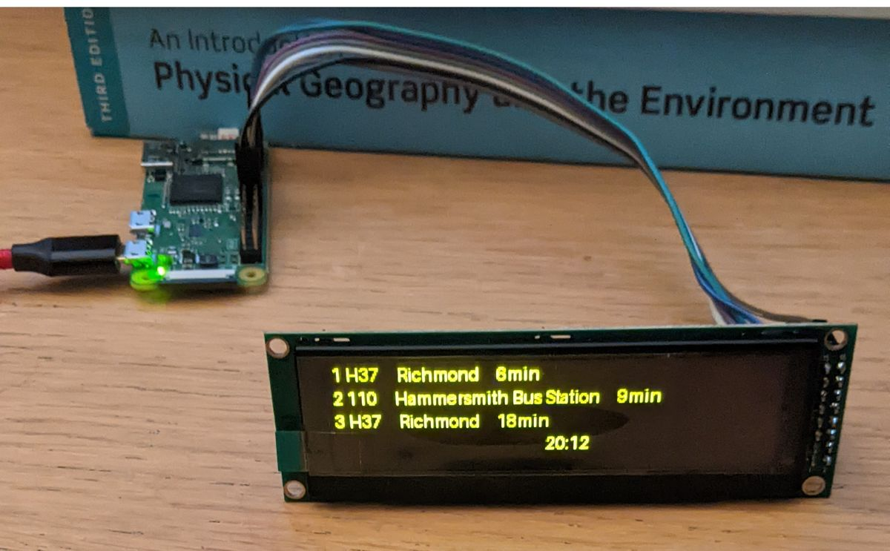
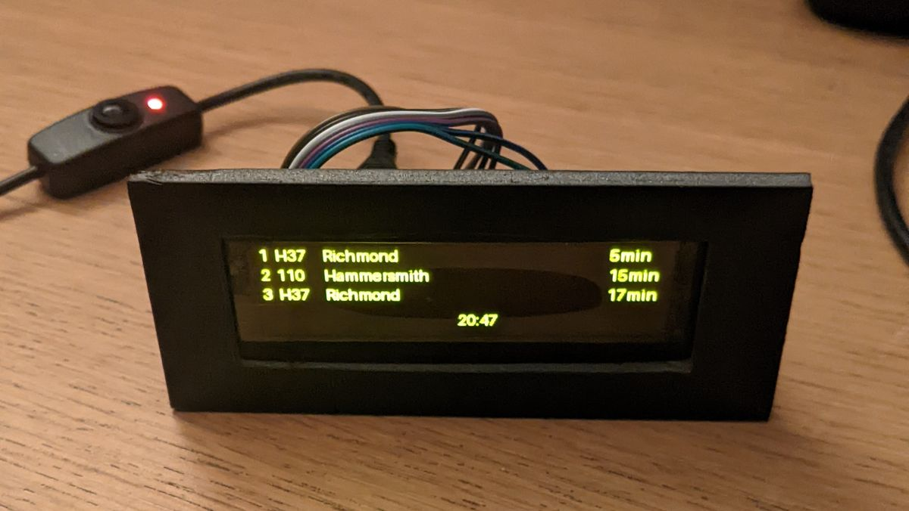
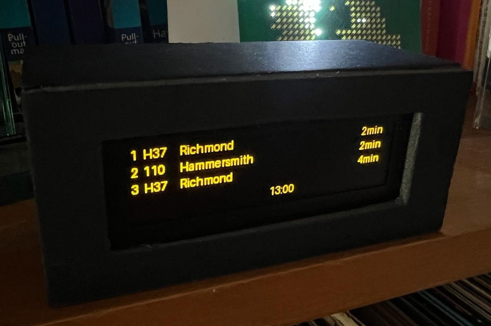

TfL Bus Departure Board
I recently set up a live Transport for London (TfL) departure board for a local bus stop using a Raspberry Pi Zero 2 W and an OLED display. This project drew inspiration from two GitHub repositories: Bus-Departure-Board by jfoot and Train-Departure-Screen by chrishutchinson.
Hardware Required
- Raspberry Pi Zero 2 W: Mini computer.
- SD Card: To run Raspberry Pi OS.
- OLED Display: To show the live departure times.
- Pin Wires: To connect the Pi to the display.
How It Works
The setup involves two Python scripts that run automatically when the Raspberry Pi boots up. The first script fetches live bus departure data from the TfL API using the python requests module. The second script displays this data on the OLED screen with the help of the luma.oled library. The display updates every few seconds to ensure the information remains current.
The project also uses rc.local to automate script execution when the Pi is turned on, making the departure board a hands-off tool for my parents to quickly check bus times.
To give the departure board a polished look, I enclosed the screen and Pi in a case that I made from black foam. This not only made it look more like a real departure board but also kept everything neatly contained. I also added an on/off switch, allowing the board to be easily powered up or down.


